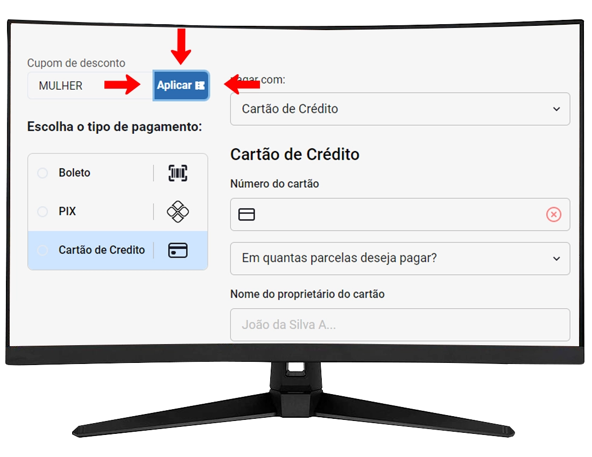

FAQ Perguntas Frequentes
O que é Central de Atendimento?
É um canal de atendimento pelo WhatsApp com sistema robotizado programado. A Central de atendimento centraliza os contatos de todas as lojas do grupo Nosso Lar, fornecendo o contato de cada departamento e direcionando os clientes aos canais corretos, por exemplo:
• SAC: Serviço de Atendimento ao Consumidor como reclamações, elogios e dúvidas sobre compras realizadas na loja física
• Assistência Técnica: Produtos com defeito
• Promotor de vendas: Vendedores
• Crediário: Crédito e cobrança como negociação de débitos etc
• Site: Dúvidas sobre pedido, entrega, troca e devolução etc
-
Como acessar a Central de Atendimento?

Clique aqui para acessar a Central de Atendimento. Ao clicar no link, você deverá seguir os comandos digitando somente números. A central não entende áudios, mensagens ou ligações. Ela é automática e você deve digitar apenas o número da opção desejada.
-
Como falar com um vendedor da loja mais próxima?
Clique aqui para acessar a Central de Atendimento, escolha a cidade da filial que deseja falar (digitando número ), clique na opção promotor de vendas(digitando numero 6), irá aparecer a opção do departamento, se desejar falar sobre compra de móveis ou de celulares, digite o número correspondente e ficará disponível as opções com nomes de todos vendedores dessa filial, por último escolha o vendedor digitando o número correspondente e clique no link que ira direcionar para o whatsapp do vendedor.
Veja o exemplo:

-
Como falar com o crediário?
Basta acessar a central de atendimento, seguir os comandos escolhendo a opção 5 (pagamentos).
Veja o exemplo:

Obs: A equipe do crediário trata assuntos relacionados à: pagamento de parcelas, negociação de débitos e cobrança. Referente a compras pelo crediário da loja os vendedores que fazem o atendimento ao cliente.
Como comprar pelo site
-
Qual endereço do site das Lojas Nosso Lar?
Comprar conosco é simples, rápido e fácil, acesse: www.lojasnossolar.com.br
-
Comprar no site das Lojas Nosso Lar é seguro?
Comprar conosco é simples, seguro e fácil. Fique tranquilo, trabalhamos com a melhor e maior segurança de dados atualmente disponível no mercado. Todas as informações são codificadas (criptografadas), armazenadas com segurança e respeitam a todo instante sua privacidade. Assumimos o compromisso de que, em nenhuma hipótese, divulgaremos os dados cadastrais de nossos clientes. Seguimos as normas de não divulgar dados de clientes conforme consta na LGPD.
-
Como faço para comprar pelo site?
Primeiramente, selecione o produto, verifique se ele está disponível e as formas de envio e, em seguida, clique em comprar. Após isso, basta seguir preenchendo todas as informações solicitadas.
Caso ainda não tenha cadastro no site para compras, abrirá uma tela para se cadastrar. Nessa parte, será necessário preencher o seu nome, sobrenome e criar uma senha de acesso ao site. É importante guardar essa senha, pois todas as vezes que for acessar o site na tela de login, será preciso adicionar o e-mail e senha cadastrados.
Se você já tiver cadastro, terá que usar o mesmo e-mail, senha e CPF já usados em compras anteriores e efetuar o login.
Caso já tenha cadastro, mas não se recorda da senha de acesso para compras, clique na opção Esqueceu a senha. Ao fazer isso, abrirá uma tela para adicionar o e-mail. Adicione o email e clique em enviar. Logo em seguida, você receberá um link (Redefinir senha) para criar sua nova senha. Depois de redefinida, poderá fazer o login com e-mail e nova senha cadastrada. -
Passo a passo para realizar a 1°Compra
-
Tem como comprar usando 2 cartões?
Sim, na parte do pagamento, escolha a opção cartão de crédito e em pagar com selecione a opção 2 cartões de crédito.
Veja o exemplo:


-
Tem como comprar com pix e parcelar restante no cartão?
Sim, na parte do pagamento, escolha a opção PIX e em pagar com selecione PIX e cartão de crédito
Veja o exemplo:


-
Como utilizar o Cupom de Desconto?
Após clicar em “Comprar” a página será direcionada para: MEU CARRINHO ➔ FECHAR PEDIDO ➔ DADOS PESSOAIS ➔ ENTREGA ➔ PAGAMENTO, nessa parte terá o campo cupom desconto, digite o nome do cupom e clique em APLICAR. O cálculo será realizado sobre o valor total da compra.
Veja o exemplo:
 -
É possível comprar no crediário pelo site?
Não. Por enquanto, pelo nosso site não tem essa opção de comprar pelo crediário. As formas de pagamento são: pix, boleto bancário à vista ou parcelado nos cartões de crédito.
OBS: É possível comprar no crediário sem estar presente na loja física, mas não é pelo site, isso é intermediado pelo vendedor e vale somente para clientes já cadastrados no crediário. (Para mais informações falar com vendedor/sujeito análise de crédito). -
Posso realizar compras pelo Telefone?
Temos um time de vendedores que estão prontos para te ajudar a esclarecer qualquer duvida por telefone, porém o pagamento deve ser realizado pelo nosso site ou até mesmo indo ate a loja mais próxima da sua cidade.
-
Como faço para comprar no site negociando com vendedor?
É possível contatar um vendedor da sua região através da nossa central de atendimento. Clique aqui para acessa Central de Atendimento e siga os comandos digitando somente o número 6(Promotor de vendas).A central responde automaticamente, não entende áudios e ligações.
-
Os produtos comercializados pela Lojas Nosso Lar possuem garantia?
Todos os nossos produtos são originais e possuem garantia de fábrica. Acesse a página do produto no site (https://www.lojasnossolar.com.br/) e consulte as especificações técnicas, lá constam as informações de maneira detalhada.
-
Como saber se o produto está disponível para o meu CEP
Para saber se um produto de nosso site estará disponível ou não para entregar em sua região, basta selecionar o produto, colocar o CEP do seu endereço no campo Calcule o frete e clicar em Calcular. Ao clicar em calcular, aparecerá se o produto está disponível, as opções de transportadoras e o prazo para entrega (os prazos de entrega são em dias úteis).
-
Como saber se a loja Nosso Lar faz entrega grátis em minha cidade?
Escolha o produto, em seguida coloque o CEP da sua cidade e clique em Calcular. Irá aparecer as opções das transportadoras, que são:
- Transportadora Lojas Nosso Lar- Grátis;
- Demais transportadoras com cobrança de frete. -
Como saber se o produto está disponível para retirada em determinada Loja Nosso Lar?
Coloque no campo Calcule o frete o CEP da cidade da loja que deseja retirar o produto e clique em Calcular, caso tenha o produto disponível, irá aparecer: TRANSPORTADORA NOSSO LAR - GRÁTIS.
-
Quando posso retirar minha compra?
Enviaremos no email adicionado ao pedido o comprovante em PDF juntamente com endereço e local de retirada.
-
Como acompanhar um pedido realizado pelo site?
Após finalizar o pedido pelo site, as demais informações serão enviadas no e-mail que foi adicionado no pedido.
-
Como saber se minha compra já foi aprovada?
As compras com cartões passam por análise, você receberá o e-mail de pagamento confirmado. Este e-mail é a confirmação que a sua compra foi aprovada e em seguida(em horário comercial) será faturada.
-
Porque minha compra foi cancelada?
As compras no cartão de crédito passam por uma análise e sua compra provavelmente foi cancelada devido divergências de dados.
Pagamentos de Parcelas
-
Comprei no carnê da loja e quero pagar pelo site, como faço?
Acesse o nosso site: https://www.lojasnossolar.com.br/e em seguida clicar na opção “Meus débitos”
Segue passo a passo:
Ao entrar nessa opção, adicione o seu CPF ou CNPJ, se já possui senha cadastrada, deve adicionar o seu CPF, Senha e clicar em ENTRAR.
Caso não tenha senha cadastrada ainda, adicione o CPF e clique em 1° Acesso, nessa opção, vai abrir umas telinhas para confirmar alguns dados do seu cadastro, confirmando, será possível criar sua senha de acesso. Após isso, volte para a tela do login, adicione o CPF novamente e a senha cadastrada e clique em ENTRAR.
Em seguida selecione as parcelas e clique em pagar, adicione o seu e-mail para receber o comprovante, verifique se adicionou o e-mail corretamente.
-
Quais são as formas de pagamento de parcelas pelo site?
Pix, boleto ou cartão de débito.
Ao escolher Pix , clicar em ➔ copiar o qr code ➔ abrir seu app do banco ➔ pix copia e cola e concluir pagamento.Terá também a opção de ler o qr code e efetuar o pagamento.
E se for Boleto , copiar o código de barras e ir no seu aplicativo do banco ➔ boleto ➔ colar o código copiado e finalizar pagamento.
Já a opção Débito , abrirá uma tela para preencher todos os dados do cartão, após preenchidos, basta finalizar o pagamento. -
Já realizei pagamentos pelo site, mas, esqueci a senha. Como recuperar?
Se você já possui senha, mas não se recorda, tem a opção de redefinir a senha. Basta clicar em Esqueceu a senha, adicionar o CPF do titular da compra, clicar em continuar, confirmar os dados que forem solicitados e criar uma nova senha.
-
Fiz o pagamento do boleto em duplicidade. Como proceder?
Nesse caso, orientamos que entre em contato através do email: depositobancario01@lojasnossolar.com.br.Pedimos que envie o máximo de informações possíveis, bem como todos os comprovantes de pagamento dos boletos e extrato bancário.
-
Qual prazo para confirmar o pagamento?
Pix e Cartão de Débito: O prazo de confirmação é de até 12 horas.
Boleto Bancário: Após o pagamento do boleto, o banco tem o prazo de 3 dias úteis para confirmar o pagamento. -
Como saber se meu pagamento foi confirmado?
Você receberá o comprovante de pagamento no email adicionado
-
Ainda precisa de ajuda?
OBS: Caso tenha sido gerado boleto em loja física, não é possível solicitar a segunda via pelo site/app e nesse caso, será preciso falar com o crediário da sua região através da nossa Central de Atendimento
Lista de presentes
-
Como criar uma lista de presentes pelo site?
Ao acessar o site: www.lojasnossolar.com.br e clicar na opção Lista de presentes. Depois disso, adicione o mesmo login do site que é utilizado para compras como email/senha e clique em Entrar.
-
Passo a passo para criar a lista de Presentes
Após fazer seu login, você será direcionado para as opções criar uma lista, você deverá clicar em criar lista. Em seguida, terão as opções dos tipos de listas, escolha a que se encaixa ao seu evento ou selecione a opção outros, a seguir, clique em criar uma lista. Logo após, abrirá uma tela para preencher os dados do anfitrião e do co-anfitrião, preenchido, clique em continuar na próxima tela, será preciso preencher com os dados do evento como, por exemplo:
Nome
Horário
Local do evento
Entre outros.
Preencha tudo corretamente e clique em Continuar.
Após isso, abrirá a tela para adicionar o endereço de entrega dos produtos que deverá ser preenchido corretamente, pois esses dados serão utilizados no momento da entrega dos itens. Após preencher tudo, clique em Continuar.
Por último, terá a tela de personalizar sua lista, onde será possível adicionar uma foto de capa, de perfil e uma mensagem aos seus convidados, logo a seguir, basta finalizar sua lista. Depois de finalizada, clique em gerenciar lista e adicione os produtos, estes podem ser pesquisados pelo nome, código ou referencia do produto.
Sempre que logar com seu usuário e senha, será possível gerenciar sua lista, adicionar, excluir itens e fazer alterações da forma que desejar. -
Já tenho cadastro no site e esqueci a senha, como fazer?
Se você não se recorda da sua senha, redefina-a clicando na opção:
Esqueceu sua senha? Clique para redefinir! -
Não tenho cadastro, como fazer?
Caso ainda não possua cadastro, crie uma conta clicando na opção:
Não possui conta? Cadastre-se!
Obs.: Muito importante preencher todos dados para evitar problemas com divergências de dados, endereços de entrega, contatos etc. -
Como orientar os meus convidados a encontrar minha lista de presentes?
1ª: Ao criar a lista é gerado um link, o mesmo, pode ser enviado aos convidados onde terão acesso aos produtos da sua lista para comprar.
Obs: é preciso estar logado na sua lista na parte de produtos, para compartilhar o link, pois se estiver na opção gerenciar lista, os convidados não conseguira visualizar os produtos da lista.
2ª: Podem localizar a lista buscando em: LISTA DE PRESENTES ➔ NOME DA LISTA (ex:PAULA E JOÃO) ➔ DATA DO EVENTO ➔ BUSCAR.
Montagem De Móveis
-
As Lojas Nosso Lar fornece serviço de montagem grátis?
Oferecemos o serviço de montagem exclusivamente para linha de móveis como: armários, mesas, guarda-roupas, painel etc. Realizamos montagens de móveis vendidos e entregues pelas Lojas Nosso Lar. Não montamos móveis entregues por transportadoras parceiras.
-
Posso agendar o dia para a montagem do meu móvel?
Sim, será possível desde que a data desejada seja superior a 05 dias úteis após a entrega realizada pela loja e que a entrega tenha sido realizada em cidade que temos lojas físicas. Lembrando que as montagens deverão ser realizadas no prazo máximo de até 90 (noventa) dias corridos, a contar da data da compra após este prazo, o benefício de montagem grátis de móveis é cancelado. Para solicitar a montagem, entre em contato através dos seguintes canais de atendimento:
Email:pedidosonline@lojasnossolar.com.br
Contato:(63) 99222-0356
Obs.: Não é possível agendar montagem fora das cidades que temos lojas, pois nesses casos os montadores já irão junto no ato da entrega. -
Recebi minha compra, qual prazo de montagem?
Caso seu produto se enquadre na linha móveis e a seja região elegíveis com realização de entrega e montagem pela loja, a montagem será realizada em até 05 (cinco) dias úteis a contar da data de entrega do produto, no período 8:00h às 18:00h de segunda a sexta, e aos sábados entre 08:00h às 12:00h. Não efetuamos montagem aos domingos, nem feriados.
-
O serviço de montagem tem garantia?
Sim, o serviço de montagem possui garantia de 90 dias corridos a contar da data da compra. Em caso de defeito ou dúvidas, entre em contato através:
Email:pedidosonline@lojasnossolar.com.br
Contato:(63) 99222-0356 -
E se o montador ao furar minha parede causar danos em tubulações ou fios elétricos?
O local da montagem deverá ser indicado pelo cliente de acordo com a sua escolha e responsabilidade, portanto não nos responsabilizamos por danos ao furar paredes onde passam fios elétricos ou tubulação com água. Recomenda-se, o acompanhamento presencial do consumidor no ato da montagem ou presença de um adulto responsável.
-
O montador pode adaptar ou alterar o meu produto durante a montagem?
Os montadores seguem padrões de montagem estabelecidos pelos fabricantes e não são autorizados a alterar as características dos produtos, como acrescentar furações, serrar, pintar, etc.
-
A instalação de suporte de TV está inclusa?
A loja realiza a montagem do painel, não inclui instalações do suporte. Não realizamos instalações: elétricas, furações e hidráulicas.
-
Identifiquei defeitos durante o processo de montagem, como proceder?
Deverá entrar em contato imediatamente através do canais de atendimento abaixo:
Email:pedidosonline@lojasnossolar.com.br
Contato:(63) 99222-0356
Troca e Devolução
-
Qual o prazo para troca?
Garantimos o cumprimento do artigo 49 do Código de Defesa do Consumidor, que prevê que "o consumidor pode desistir do contrato, no prazo de 7 dias a contar de sua assinatura ou do ato de recebimento do produto ou serviço, sempre que a contratação de fornecimento de produtos e serviços ocorrer fora do estabelecimento comercial, especialmente por telefone ou a domicílio".
Se você receber o produto e quiser desistir da compra, você terá o direito de devolver e receber a restituição do valor de seu pedido. O prazo para desistência da compra é de 07 (sete) dias corridos a contar do recebimento do produto. O pedido só será cancelado caso o produto esteja em sua embalagem original, sem indícios de uso, acompanhado de nota fiscal, manual e todos os seus acessórios. -
Qual prazo para desistência?
O prazo para desistência da compra é de 07 (sete) dias corridos a contar do recebimento do produto. O pedido só será cancelado caso o produto esteja em sua embalagem original, sem indícios de uso, acompanhado de nota fiscal, manual e todos os seus acessórios.
-
Recebi meu pedido faltando acessórios. O que devo fazer?
Certifique-se que os acessórios não estão à parte na embalagem. Por exemplo, alguns produtos mantém os acessórios encaixados na parte de dentro do produto.Caso não localize, entre em contato através dos canais de atendimento:
Email:pedidosonline@lojasnossolar.com.br
Contato:(63) 99222-0356
Obs.: Essa falta deverá ser comunicada em até 07 (sete) dias corridos após o recebimento do item. -
Recebi um produto com avaria, o que devo fazer?
Se a falta de qualquer acessório for identificada no ato da entrega, você deve recusar o recebimento. Se a falta for percebida após a entrega, pedimos para que entre em contato através: Email:
Email:pedidosonline@lojasnossolar.com.br
Contato:(63) 99222-0356
Obs.: Lembramos que só efetuamos a troca de produtos de acordo com as condições descritas na nossa “Política de Troca e Devolução”. -
Posso trocar o produto após finalizar o pedido?
Após análise e aprovação do produto retornado, a devolução dos valores pagos ocorrerá na mesma forma de pagamento escolhido no momento da compra:
Cartão de crédito: será solicitado o cancelamento do débito à administradora do seu cartão. Caso isso já tenha sido feito, o estorno das parcelas pagas poderá ocorrer em até 02 (duas) faturas subsequentes. Lembramos que esse procedimento é de responsabilidade da administradora do cartão.
Boleto Bancário: a restituição será feita na conta corrente do titular da compra em até 10 (dez) dias úteis, a partir da data de aprovação da análise do produto retornado.
Pix:a restituição será feita na conta corrente do titular da compra em até 1 dia útil, a partir da data de aprovação da análise do produto retornado -
Quais as condições do produto para troca ou cancelamento do pedido?
Para que seja aceito a troca ou devolução, o produto precisa atender aos seguintes critérios:
- Estar em sua embalagem original;
- Não conter indícios de uso;
- O lacre original do fabricante deverá estar intacto;
- O conteúdo da caixa deverá estar completo (manual e todos os seus acessórios);
- Estar acompanhado da nota -
Recebi um produto diferente do meu pedido, o que devo fazer?
Caso tenha recebido um produto em desacordo com o pedido, você deverá recusar a entrega em entrar em contato conosco através:
Email:pedidosonline@lojasnossolar.com.br
Contato:(63) 99222-0356
Caso já tenha recebido o produto, o contato deverá ser realizado em até 07 (sete) dias após o recebimento.
O produto retornado ao nosso Centro de Distribuição, deverá estar de acordo com as Condições do Produto para Troca ou Cancelamento do Pedido
O produto divergente será trocado de acordo com o realizado no pedido.
Obs.: O contato poderá ser feito através: Email:pedidosonline@lojasnossolar.com.br/Contato:(63) 99222-0356 -
Meu produto apresentou defeito fora do prazo de 07 (sete) dias para troca, como proceder?
Caso o produto apresente defeito de fabricação após o prazo de 07 (sete) dias do recebimento, você deverá observar o “Contrato de Garantia do Fabricante” contido no Manual de instruções do fabricante. Caso deseje, poderá entrar em contato com o fabricante para comunicar o fato e obter esclarecimentos.
Consulte aqui a Lista de Contato dos Fabricantes:
Lista de Assistência
Caso não consiga contato com fabricante, por favor, entre em contato através:
Email:pedidosonline@lojasnossolar.com.br/Contato:(63) 99222-0356 -
Meu produto chegou com defeito, o que devo fazer?
Caso o produto apresente defeito de fabricação em até 07 (sete) dias a contar da data do recebimento, você poderá solicitar a troca ou o cancelamento da compra. A solicitação poderá ser feita através:
Email:pedidosonline@lojasnossolar.com.br/Contato:(63) 99222-0356
Entrega
-
Como acompanho minha entrega?
Para acompanhar sua entrega enviaremos no email o rastreamento, exceto para entregas pela Loja Nosso Lar(frota própria).
Quem poderá receber o meu pedido?
É necessária a presença de um responsável (maior de 18 anos) portando documento de identificação para receber a mercadoria e assinar o comprovante de entrega. Caso a entrega seja em prédio ou condomínio as transportadoras parceiras, entregam o produto para o porteiro. Entregas pela Nosso Lar, a mercadoria será entregue para o cliente ou recebedor, não deixamos mercadoria em portaria.
Posso comprar no site e retirar na loja física?
O serviço “Retira em Loja” só poderá ser realizado se no ato da compra se tiver selecionado a opção "Retirada”, pois tem muitos produtos que podem estar disponíveis apenas para determinadas lojas do grupo. Após aprovação do pedido pela instituição financeira, o pedido estará disponível para retirada na loja escolhida, conforme prazo estabelecido no momento da compra. Enviaremos no email o endereço de retirada.
Posso alterar meu endereço de entrega?
Se você já finalizou sua compra, não. Para garantir a segurança de nossos clientes, não é possível realizar a alteração do endereço. Será necessário cancelar o pedido e realizar uma nova compra. Você deverá entrar em contato solicitando o cancelamento da sua compra e após isso realizará nova compra: Email:pedidosonline@lojasnossolar.com.br / Contato:(63) 99222-0356
Meu endereço foi cadastrado errado, o que devo fazer?
Caso o endereço de entrega informado esteja incorreto, será necessário cancelar o pedido e realizar um novo. Se o produto estiver a caminho do destino, é necessário aguardar o retorno do produto ao nosso Centro de Distribuição para conclusão do cancelamento do pedido. Você deverá entrar em contato através : Email:pedidosonline@lojasnossolar.com.br / Contato:(63) 99222-0356
Meu endereço está incompleto, o que devo fazer?
Caso tenha informado o endereço de forma incompleta na finalização do pedido, você só poderá acrescentar dados complementares ao endereço, como: ponto de referência, número, bloco ou andar. Você deverá entrar em contato através: Email:pedidosonline@lojasnossolar.com.br / Contato:(63) 99222-0356
Como funciona a cobrança de frete?
O valor do frete é calculado automaticamente em nosso site de acordo com a região de entrega, peso e dimensões dos produtos adquiridos.
Qual o prazo para retirar o meu produto na loja?
O prazo é de até 15 dias corridos para retirar o produto na loja escolhida (no momento da compra). Você será notificado por e-mail assim que ele estiver disponível para retirada.
Meu pedido pode atrasar na entrega?
Trabalhamos intensivamente para evitar qualquer transtorno em sua experiência de compra, porém atrasos na entrega podem ocorrer por inúmeros fatores, como: ausência de recebedor no local de entrega, recusa no recebimento por terceiros, trânsito e fenômenos naturais.
Ainda não recebi meu pedido e a entrega está atrasada, como proceder?
Certifique-se que nenhuma pessoa no local de entrega recusou o recebimento do(s) produto(s). Se você mora em condomínio ou apartamento, verifique se o produto foi entregue na portaria.
Fatores naturais ou ocorrências adversas: alguns fatores como chuvas fortes, acidentes ou greves na região podem impossibilitar o transporte da(s) mercadoria(s).
Se o prazo excedeu, entre em contato através:
Email:pedidosonline@lojasnossolar.com.br / Contato:(63) 99222-0356Qual o horário de entrega do meu pedido?
O horário de atendimento de entrega é realizado de segunda à sexta-feira das 08h às 18h.
Comprei vários produtos. Eles serão entregues todos juntos?
A entrega poderá ser realizada separadamente, isso estará relacionado: tamanho dos produtos, transportadoras e suas disponibilidades em nossos estoques.
O que ocorre se não houver ninguém para receber minha entrega?
A transportadora faz 3 (três) tentativas de entrega do pedido e é necessário que tenha uma pessoa responsável no local. Se não houver ninguém para receber, a mercadoria retorna ao Centro de Distribuição e nossa equipe entrará em contato para informar quando será realizada uma nova tentativa (sujeito a cobrança extra na 4ª tentativa),no caso os correios, se não tiver ninguém para receber retornam para unidade mais próxima e ficam aguardando cliente retirar nessa unidade. O pedido pode ser entregue à terceiros, como "porteiros e secretárias", desde que assinem o comprovante de recebimento.
Obs.: Importante: Acompanhem o rastreamento da compra .O que devo verificar no ato da entrega?
Embora tenhamos todo o cuidado necessário para garantir a entrega do pedido, recomendamos que verifique os seguintes pontos no momento do recebimento do pedido:
- Confira o conteúdo do pedido na presença do entregador;
- Verifique se a embalagem não está violada;
- Se os produtos estão de acordo com o pedido realizado;
- Se o pedido está acompanhado da Nota/Cupom Fiscal;
- Se a voltagem elétrica do produto esta correta(110V ou 220V);
Caso ocorra alguma divergência do conteúdo recuse a entrega e nos comunique imediatamente através: Email:pedidosonline@lojasnossolar.com.br / Contato:(63) 99222-0356Meu pedido está parado com o status de “Separando Mercadoria”. Vou recebê-lo?
Esse status indica que o pedido está em processo de faturamento da compra. Enviaremos no e-mail o rastreamento da sua entrega, logo após ser despachada a mercadoria nas transportadoras (exceto envios pela transportadora Nosso Lar). Caso ele esteja com prazo de separação ultrapassado do prazo de previsão de entrega informado, entre em contato através:
Email:pedidosonline@lojasnossolar.com.br / Contato:(63) 99222-0356Meu pedido foi extraviado, como proceder?
Neste caso iremos confirmar as informações com a transportadora. Orientamos que entre em contato através: Email:pedidosonline@lojasnossolar.com.br / Contato:(63) 99222-0356
A Loja realiza entrega a terceiros (quem pode receber minha entrega)?
Um responsável maior de 18 (dezoito) anos é indispensável para receber a mercadoria e assinar o comprovante de entrega. O responsável deve portar um documento original com foto no local de recebimento.
Tocantins
Araguaína (matriz)
- Avenida Conego Jão Lima N°1669 Centro
- Araguaína-TO CEP:77804-010
- Telefone:(63)3415-8400
- Central de Atendimento ao Cliente
(63)9130-3038 - Horários de Funcionamento:
Segunda a Sexta 08:00 às 18:30
Sábado 08:00 às 13:30
PALMAS CENTRO
- 104 Norte Rua NE-01 LT 41
- Palmas-TO CEP:77006-016
- Telefone:(63)3219-8600
- Central de Atendimento ao Cliente
(63)9130-3038 - Horários de Funcionamento:
Segunda a Sexta 08:00 às 18:30
Sábado 08:00 às 13:30
TAQUARALTO PALMAS
- Avenida Tocantins Setor Santa Fé (Taquaralto)
- Taquaralto-To CEP:77064-580
- Telefone:(63)3572-9100
- Central de Atendimento ao Cliente
(63)9130-3038 - Horários de Funcionamento:
Segunda a Sexta 08:00 às 18:30
Sábado 08:00 às 13:30
COLINAS DO TOCANTINS
- Avenida Pedro Ludovico Teixeira N°1077 Centro
- Colinas do Tocantins - TO CEP:77760-000
- Telefone:(63)3476-6000
- Central de Atendimento ao Cliente
(63)9130-3038 - Horários de Funcionamento:
Segunda a Sexta 08:00 às 18:30
Sábado 08:00 às 13:30
GUARAI
- Avenida Bernado Sayão N°1420
- Guaraí-TO CEP:77700-000
- Telefone:(63)3464-7000
- Central de Atendimento ao Cliente
(63)9130-3038 - Horários de Funcionamento:
Segunda a Sexta 08:00 às 18:30
Sábado 08:00 às 13:30
GURUPI
- Avenida Perimental Sul N°120 Quadra Chacara 95-E Setor Casego
- Gurupi-TO CEP:77405-380
- Telefone:(63)3311-4500
- Central de Atendimento ao Cliente
(63)9130-3038 - Horários de Funcionamento:
Segunda a Sexta 08:00 às 18:30
Sábado 08:00 às 13:30
ARAGUATINS
- Rua Vicente Bernadino N°625 Centro
- Araguatins-TO CEP:77950-000
- Telefone:(63)3474-4700
- Central de Atendimento ao Cliente
(63)9130-3038 - Horários de Funcionamento:
Segunda a Sexta 08:00 às 18:30
Sábado 08:00 às 13:30
PARAISO DO TOCANTINS
- Avenida Bernado Sayão, N°416 Centro
- Paraiso do Tocantins-TO CEP:77600-000
- Telefone:(63)3361-0500
- Central de Atendimento ao Cliente
(63)9130-3038 - Horários de Funcionamento:
Segunda a Sexta 08:00 às 18:30
Sábado 08:00 às 13:30
PORTO NACIONAL
- Avenida Joaquim Aires N°2341 Centro
- Porto Nacional-TO CEP:77500-000
- Telefone:(63)3363-0400
- Central de Atendimento ao Cliente
(63)9130-3038 - Horários de Funcionamento:
Segunda a Sexta 08:00 às 18:30
Sábado 08:00 às 13:30
Pará
SÃO GERALDO DO ARAGUAIA
- Avenida Castelo Branco, BR-153,Lote 1A, Beira Rio
- São Geraldo-PA CEP:68570-000
- Telefone:(94)99246-2551
- Central de Atendimento ao Cliente
(63)9130-3038 - Horários de Funcionamento:
Segunda a Sexta 08:00 às 18:30
Sábado 08:00 às 13:30
REDENÇÃO
- Avenida Brasil N°2579 Núcleo Urbano
- Redenção-PA CEP:68553-052
- Telefone:(94)3426-2405
- Central de Atendimento ao Cliente
(63)9130-3038 - Horários de Funcionamento:
Segunda a Sexta 08:00 às 18:30
Sábado 08:00 às 13:30
XINGUARA
- Avenida Xingu N°55 Centro
- Xinguara-PA CEP:68555-011
- Telefone:(94)3426-2405
- Central de Atendimento ao Cliente
(63)9130-3038 - Horários de Funcionamento:
Segunda a Sexta 08:00 às 18:30
Sábado 08:00 às 13:30
Bahia
LUIS EDUARDO MAGALHAES
- Rua Jose Cardoso de Lima N°1090 Centro
- Luis Eduardo-BA CEP:47850-003
- Telefone:(77)3639-7050
- Central de Atendimento ao Cliente
(63)9130-3038 - Horários de Funcionamento:
Segunda a Sexta 08:00 às 18:30
Sábado 08:00 às 13:30
BARREIRAS
- Rua Coronel Magno N° 499 Centro
- Barreiras-BA CEP:47800-154
- Telefone:(77)3614-0600
- Central de Atendimento ao Cliente
(63)9130-3038 - Horários de Funcionamento:
Segunda a Sexta 08:00 às 18:30
Sábado 08:00 às 13:30
Maranhão
BALSAS
- Avenida Raimundo Felix N°180 Bairro de Fátima
- Balsas-MA CEP:65800-000
- Telefone:(99)3542-6400
- Central de Atendimento ao Cliente
(63)9130-3038 - Horários de Funcionamento:
Segunda a Sexta 08:00 às 18:30
Sábado 08:00 às 13:30
BACABAL
- Rua Getulio Vargas N°560 Centro
- Bacabal-MA CEP:65700-000
- Telefone:(63)9 9211-7533
- Central de Atendimento ao Cliente
(63)9130-3038 - Horários de Funcionamento:
Segunda a Sexta 08:00 às 18:30
Sábado 08:00 às 13:30
SANTA INES
- Avenida Marechal Castelo Branco, São Cristóvão
- Santa Inês-MA CEP:65304-610
- Telefone:(98)3681-2700
- Central de Atendimento ao Cliente
(63)9130-3038 - Horários de Funcionamento:
Segunda a Sexta 08:00 às 18:30
Sábado 08:00 às 13:30